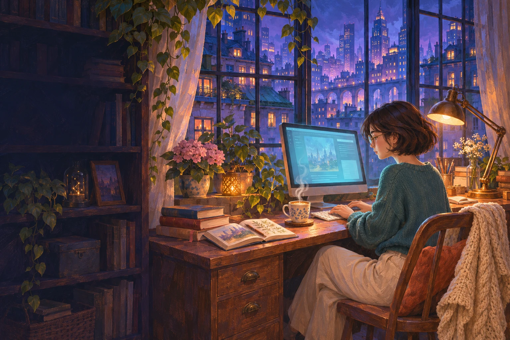

UI/UX Design
Research, wireframes & prototyping

MANUSHREE UPADHYAYA / PORTFOLIO
UI/UX Designer & Developer
Designing experiences.
Dreaming beyond the ordinary.
01 / THE PERSON BEHIND THE PIXELS
I’m Manushree Upadhyaya, a Computer Science graduate exploring how thoughtful design and practical code can make everyday tasks easier.
I studied at Herald College Kathmandu, affiliated with the University of Wolverhampton. My coursework has taken me from interviewing learners and prototyping interfaces in Figma to building a doctor appointment application in Django and delivery simulations in Unity.
I’m early in my career, open to feedback, and looking for opportunities to keep learning through real work.
02 / IDEAS MADE TANGIBLE
Academic projects.
Real learning, one iteration at a time.
Project artwork is an illustrative cover, not a screenshot of the original application.
03 / MY TOOLKIT
These tools reflect academic use and learning, rather than a claim of advanced proficiency.
04 / THE SHORT VERSION
Education, academic projects, and the tools I’ve used.
Choose the version that fits the opportunity.
05 / THE NEXT CHAPTER
Open to early-career opportunities in design and development.
manushreeo61@gmail.com ↗